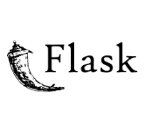

Flask is a micro web framework written in Python. It is designed to make it easy to build web applications quickly and with minimal code. Flask is lightweight and modular, allowing developers to choose the components they need for their applications.
Flask provides a simple and flexible way to create web applications, with features such as routing, request handling, and templating. It is often used for building RESTful APIs and small to medium-sized web applications. Flask is known for its simplicity and ease of use, making it a popular choice for developers who want to get started quickly.
